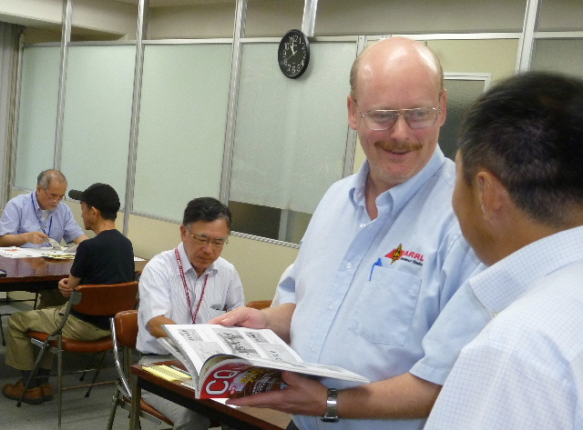

Flash ! DX
|
Who said 6M was a dead band ?
|
(注)
このReportをご覧になる方へ
[Back Issues Aug.2013]
TIME:UTC(JST-09:00)
Report from JA1RJU(PM95sq)
31.Aug.2013(15:00b)
VK4RTL/b 09:05- 50.282 CW Beacon
Report from JA1RJU(PM95sq)
30.Aug.2013(15:00c)
VK4RHT/b 07:50- 50.281 CW Beacon
VK4RTL/b 07:50- 50.282 CW Beacon
VK8MS 12:00 50.110 CW CQ
Report from JA1RJU(PM95sq)
29.Aug.2013(15:00d)
VK4RHT/b 09:30- 50.281 CW Beacon
VK4RTL/b 09:30- 50.282 CW Beacon
VK8MS 12:14 50.110 CW CQ
VK4RHT/b 12:15- 50.281 CW Beacon
VK8VF/b 12:15- 50.310 CW Beacon
Report from JA1RJU(PM95sq)
28.Aug.2013(15:00b)
Report from JA1RJU(PM95sq)
27.Aug.2013(15:00d)
VK6RSX/b 08:45- 50.304 CW Beacon RST599
VK4RHT/b 11:50- 50.281 CW Beacon
VK4RTL/b 11:50- 50.282 CW Beacon
VK6RSX/b 11:50- 50.304 CW Beacon
VK8VF/b 11:50- 50.310 CW Beacon
Report from JA1RJU(PM95sq)
26.Aug.2013(15:00b)
Report from JA1RJU(PM95sq)
25.Aug.2013(15:00d)
◎ HAM FAIR 2013 (8/24-8/25:Tokyo big Site)
ZL-TV 02:50- 45.24/25/260 --
ZL2WHO/B 02:50- 50.024 CW Beacon RST599 QSB
VK6RSX/b 05:35- 50.304 CW Beacon RST599
BU2CB 08:55 50.110 CW CQ
VK4RTL/b 09:10- 50.282 CW Beacon
VK4RHT/b 09:35- 50.281 CW Beacon
Report from JA1RJU(PM95sq)
24.Aug.2013(15:00b)
◎ HAM FAIR 2013 (8/24-8/25:Tokyo big Site)



8/22-23日の両日、巣鴨のJARL事務局で行われたDXCCの申請受付。
今年はARRLからNN1N/Dave(左の写真)が来日。
Report from JA1RJU(PM95sq)
23.Aug.2013(15:00c)
VK6RSX/b 08:15- 50.304 CW Beacon
VK4RHT/b 11:50- 50.281 CW Beacon
Report from JA1RJU(PM95sq)
22.Aug.2013(15:00c)
FK8CP 06:48 50.110 CW CQ
FK8SIX/b 06:50- 50.080 CW Beacon
VK4RHT/b 10:40- 50.281 CW Beacon
VK4RTL/b 10:40- 50.282 CW Beacon
VK6RSX/b 10:40- 50.304 CW Beacon
Report from JA1RJU(PM95sq)
21.Aug.2013(15:00d)
VK4RHT/b 08:40- 50.281 CW Beacon RST599
VK4RTL/b 08:40- 50.282 CW Beacon RST599
VK4FP 08:47 50.110 CW CQ RST599
VK6RSX/b 09:00- 50.304 CW Beacon RST599
VK6OX/P 09:12 50.110 SSB @ QTH PG08mm RS59/59
VK4ZJB 09:20 50.110 SSB @
VK4EK 09:21 50.110/120 SSB @
VK6OX/P 09:30 50.110 SSB still good
VK6OC 09:35 50.110 SSB @ Mark RS59/55
Report from JA1RJU(PM95sq)
20.Aug.2013(15:00c)
VK8VF/b 12:25- 50.310 CW Beacon
Report from JA1RJU(PM95sq)
19.Aug.2013(15:00d)
VK4RTL/b 07:20- 50.282 CW Beacon
VK6RSX/b 07:40- 50.304 CW Beacon RST599
VK4RHT/b 09:35- 50.281 CW Beacon RST599
VK4RTL/b 09:35- 50.282 CW Beacon RST599
VK6RSX/b 10:00- 50.304 CW Beacon RST599
VK8VF/b 12:00- 50.310 CW Beacon
Report from JA1RJU(PM95sq)
18.Aug.2013(15:00d)
VK4EK 06:22- 50.110 SSB @ RS59/59
AH2G/B 08:15- 50.0043 CW Beacon RST599
DU1EV/B 08:15- 50.008 CW Beacon RST599
BA4SI 08:35 50.110 CW CQ
VK4RTL/b 08:53- 50.282 CW Beacon
Report from JA1RJU(PM95sq)
17.Aug.2013(15:00d)
KH9/WA2YUN/B 06:58- 50.014 CW Beacon RST559
VK4RHT/b 08:30- 50.281 CW Beacon RST599
VK4RTL/b 09:10- 50.282 CW Beacon RST599
VK6RSX/b 08:33- 50.304 CW Beacon RST599
Report from JA1RJU(PM95sq)
16.Aug.2013(15:00c)
VK4RTL/b 09:10- 50.282 CW Beacon RST599
VK4RHT/b 09:25- 50.281 CW Beacon
VK6RSX/b 09:33- 50.304 CW Beacon RST599
Report from JA1RJU(PM95sq)
15.Aug.2013(15:00b)
Report from JA1RJU(PM95sq)
14.Aug.2013(15:00b)
Report from JA1RJU(PM95sq)
13.Aug.2013(15:00c)
VK4RHT/b 10:00- 50.281 CW Beacon
VK4RTL/b 10:00- 50.282 CW Beacon
Report from JA1RJU(PM95sq)
12.Aug.2013(15:00d)
KH0/K3BI 07:22 50.110 CW @ RST579 QSL via JJ3AZA
KH0/K3BI 07:40 50.120 CW CQ
KG6DX 07:52 50.120 CW QSO with KH0/K3BI
KH0/K3BI 08:07 50.120 SSB @ RS59
Report from JA1RJU(PM95sq)
11.Aug.2013(15:00b)
VK4RHT/b 10:55- 50.281 CW Beacon
VK4RTL/b 10:55- 50.282 CW Beacon
Report from JA1RJU(PM95sq)
10.Aug.2013(15:00b)
Report from JA1RJU(PM95sq)
09.Aug.2013(15:00b)
Report from JA1RJU(PM95sq)
08.Aug.2013(15:00b)
VK4RTL/b 09:45- 50.282 CW Beacon RST559
Report from JA1RJU(PM95sq)
07.Aug.2013(15:00c)
KH9/WA2YUN/B 02:35- 50.014 CW Beacon
Report from JA1RJU(PM95sq)
06.Aug.2013(15:00b)
Report from JA1RJU(PM95sq)
05.Aug.2013(15:00c)
Report from JA1RJU(PM95sq)
04.Aug.2013(15:00c)
KH9/WA2YUN/B 00:20- 50.014 CW Beacon
Report from JA1RJU(PM95sq)
03.Aug.2013(15:00d)
KH9/WA2YUN/B 05:33- 50.014 CW Beacon
KH9/WA2YUN/B 07:04- 50.014 CW Beacon again
KH9/WA2YUN/B 07:37- 50.014 CW Beacon again
KH9/WA2YUN/B 08:25- 50.014 CW Beacon again
Report from JA1RJU(PM95sq)
02.Aug.2013(15:00b)
Report from JA1RJU(PM95sq)
01.Aug.2013(15:00b)